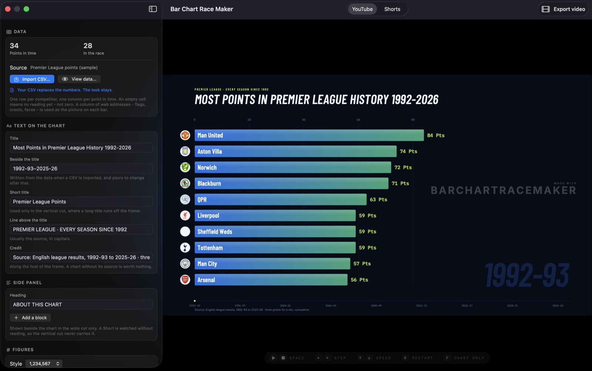
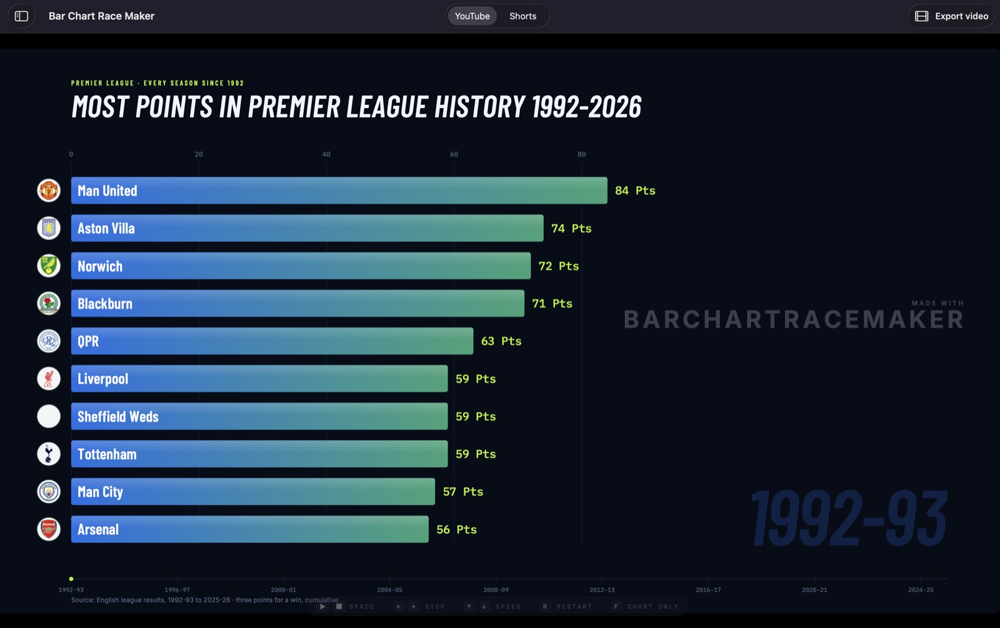
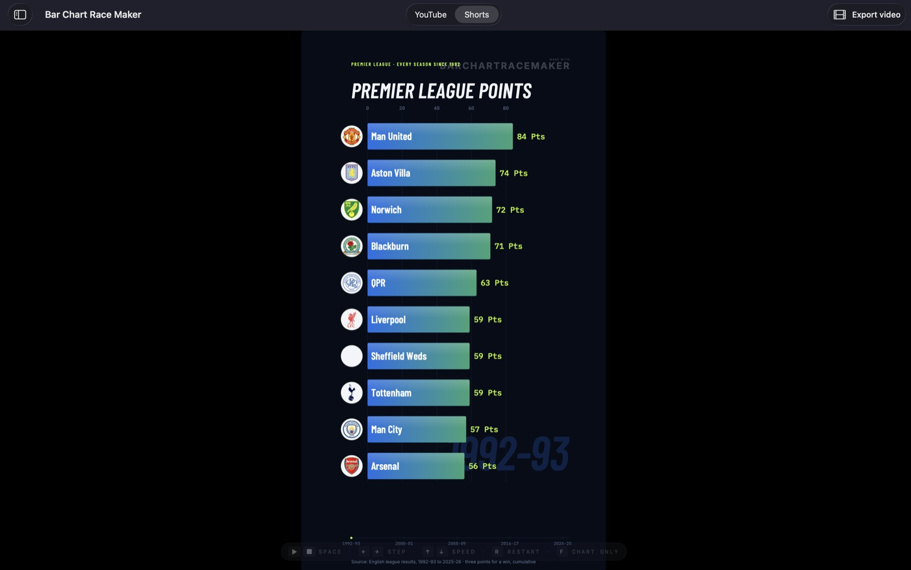

Import a CSV and export a finished ranking video — up to 4K for YouTube, 9:16 for Shorts, TikTok and Reels. No screen recording, no account, nothing uploaded.Importá un CSV y exportá un video de ranking terminado — hasta 4K para YouTube, 9:16 para Shorts, TikTok y Reels. Sin grabar la pantalla, sin cuenta, sin subir nada.

Most bar chart race tools live in a browser and hand you an embed. This one hands you the file.Casi todas las herramientas de bar chart race viven en un navegador y te dan un embed. Esta te da el archivo.
Recorded frame by frame at the exact size of the finished frame, up to 3840×2160. It comes out identical every time, whatever else the machine is doing.Grabado cuadro por cuadro al tamaño exacto del cuadro final, hasta 3840×2160. Sale idéntico siempre, sin importar qué más esté haciendo la máquina.
16:9 and 9:16, switched with one control. The vertical cut keeps both edges clear of the platform’s own buttons.16:9 y 9:16, con un solo control. El corte vertical mantiene los dos bordes libres de los botones de la plataforma.
Three templates, each taken from a chart with published videos behind it. No font picker — a free choice of font is how a chart made in five minutes comes out looking like it.Tres plantillas, cada una tomada de un gráfico con videos publicados detrás. Sin selector de tipografías: elegir fuente libremente es como un gráfico hecho en cinco minutos termina pareciendo eso.
Semicolons, decimal commas, currency symbols and quoted names. An empty cell stays empty instead of becoming a zero — and a table shows you exactly what was read.Punto y coma, comas decimales, símbolos de moneda y nombres entre comillas. Una celda vacía queda vacía en vez de volverse cero, y una tabla te muestra exactamente qué se leyó.
265 round country flags ship inside the app. Any column of image addresses in your own file is drawn on the bars instead.265 banderas circulares vienen dentro de la app. Cualquier columna de direcciones de imagen de tu archivo se dibuja en las barras.
No account, no cloud, no upload. Your spreadsheet, your pictures and your finished video never leave the machine.Sin cuenta, sin nube, sin subir nada. Tu planilla, tus imágenes y tu video terminado nunca salen de la máquina.
Four steps from a spreadsheet to an upload. The first video takes about ten minutes; the next one takes two.Cuatro pasos de una planilla a una subida. El primer video lleva unos diez minutos; el siguiente, dos.
Open the app and choose one of the three templates. Each arrives with a finished chart in it.Abrí la app y elegí una de las tres plantillas. Cada una llega con un gráfico terminado adentro.
One row per competitor, one column per point in time. Your numbers replace the template’s and the styling stays.Una fila por competidor, una columna por punto en el tiempo. Tus números reemplazan a los de la plantilla y el estilo queda.
Title, the line above it, the credit along the foot. Set the pace and watch the finished length update beside the slider.Título, la línea de arriba, el crédito al pie. Ajustá el ritmo y mirá cómo se actualiza la duración final al lado del control.
16:9 or 9:16, full size or half, 30 or 60fps. The panel says how many frames and roughly how long before you start.16:9 o 9:16, tamaño completo o mitad, 30 o 60fps. El panel te dice cuántos cuadros y cuánto va a tardar antes de empezar.
The preview is the same page the exporter records, at the same shape — so what you see is what uploads.La vista previa es la misma página que graba el exportador, con la misma forma: lo que ves es lo que se sube.


The free version renders at full resolution with no limit on how many videos you make. It signs them with a small mark, which one payment removes forever.La versión gratis renderiza a resolución completa sin límite de videos. Los firma con una marca chica, que un solo pago saca para siempre.
How to shape the data, how to get the video out, and how to make it look like the ones that get watched.Cómo armar los datos, cómo sacar el video, y cómo lograr que se vea como los que la gente mira.
Four steps, from a spreadsheet to a finished MP4. No code, no After Effects, no account.Cuatro pasos, de una planilla a un MP4 terminado. Sin código, sin After Effects, sin cuenta.
Read the guide →Leer la guía →The layout, the column names that are recognised, and the two mistakes that make a finished chart look wrong.La estructura, los nombres de columna que se reconocen, y los dos errores que hacen que un gráfico terminado se vea mal.
Read the guide →Leer la guía →A real video file, up to 3840×2160, written frame by frame — not a recording of a browser window.Un archivo de video real, hasta 3840×2160, escrito cuadro por cuadro: no una grabación de una ventana del navegador.
Read the guide →Leer la guía →The same project, exported in 9:16 — and laid out for a frame nobody ever sees whole.El mismo proyecto, exportado en 9:16 — y diseñado para un cuadro que nadie ve entero.
Read the guide →Leer la guía →Your sheet is already most of the way there. Here is the layout, the export, and the traps that come with spreadsheet files.Tu planilla ya está casi lista. Acá está la estructura, la exportación, y las trampas que traen los archivos de planilla.
Read the guide →Leer la guía →Two ways to get a picture onto every bar: a country code, or a column of addresses in your own file.Dos formas de poner una imagen en cada barra: un código de país, o una columna de direcciones en tu propio archivo.
Read the guide →Leer la guía →What the mark is, what one payment removes, and what is identical either way.Qué es la marca, qué saca un solo pago, y qué es idéntico de las dos formas.
Read the guide →Leer la guía →Flourish is very good at what it is for. If what you need is an MP4, it is the wrong end of the tool.Flourish es muy bueno en lo suyo. Si lo que necesitás es un MP4, es la punta equivocada de la herramienta.
Read the guide →Leer la guía →The things people ask before they download it.Lo que la gente pregunta antes de bajarla.
An animated ranking: one bar per competitor, ordered by value, re-sorting itself as it moves through time. It is the format behind most of the “most valuable companies” and “most points in history” videos on YouTube and TikTok.Un ranking animado: una barra por competidor, ordenadas por valor, reordenándose a medida que avanza el tiempo. Es el formato detrás de casi todos los videos de “empresas más valiosas” y “más puntos de la historia” en YouTube y TikTok. Learn more →Ver más →
Pick one of the three shipped looks, import a CSV with one row per competitor and one column per point in time, edit the title and the pace, then export. Four steps, no code and no account.Elegís uno de los tres estilos que trae, importás un CSV con una fila por competidor y una columna por punto en el tiempo, editás el título y el ritmo, y exportás. Cuatro pasos, sin código y sin cuenta. Learn more →Ver más →
Yes — a real video file, up to 3840×2160 at 30 or 60fps, written frame by frame rather than screen-recorded. A screen recording is at the mercy of whatever else the machine is doing and comes out the size of a window.Sí: un archivo de video real, hasta 3840×2160 a 30 o 60fps, escrito cuadro por cuadro en vez de grabando la pantalla. Una grabación de pantalla queda a merced de lo que sea que esté haciendo la máquina y sale del tamaño de una ventana. Learn more →Ver más →
One row per competitor, one column per point in time — a year, a season like 1992-93, or a date. The first column is the name. An empty cell means no reading yet, which is not the same as a zero.Una fila por competidor, una columna por punto en el tiempo: un año, una temporada como 1992-93, o una fecha. La primera columna es el nombre. Una celda vacía significa que todavía no hay dato, que no es lo mismo que un cero. Learn more →Ver más →
Yes. The same project exports 16:9 for YouTube and 9:16 for Shorts, TikTok and Reels, and the vertical cut is laid out for it — wider margins so the platform’s own buttons do not sit on your bars.Sí. El mismo proyecto exporta 16:9 para YouTube y 9:16 para Shorts, TikTok y Reels, y el corte vertical está diseñado para eso: márgenes más anchos para que los botones de la plataforma no se sienten encima de tus barras. Learn more →Ver más →
The app is free forever and exports at full resolution with no limit. Free exports carry a small MADE WITH mark, and one payment removes it from every video, for good. No subscription. Everything else is identical.La app es gratis para siempre y exporta a resolución completa sin límite. Las exportaciones gratuitas llevan una marca chica MADE WITH, y un solo pago la saca de todos tus videos, para siempre. Sin suscripción. Todo lo demás es idéntico. Learn more →Ver más →
For video, yes. Flourish is excellent for embedding an interactive chart in an article, but it has no MP4 export outside an enterprise contract, so creators screen-record it. This app hands you the file instead.Para video, sí. Flourish es excelente para incrustar un gráfico interactivo en una nota, pero no exporta MP4 fuera de un contrato enterprise, así que la gente termina grabando la pantalla. Esta app te da el archivo. Learn more →Ver más →
Yes. 265 round country flags ship inside the app and are matched from a two-letter code, and any column of image addresses in your own file — crests, logos, faces — is drawn on the bars instead.Sí. La app trae 265 banderas circulares que se emparejan con un código de dos letras, y cualquier columna de direcciones de imagen de tu archivo — escudos, logos, caras — se dibuja en las barras. Learn more →Ver más →
Yes. Export the sheet as CSV and import it. The reader handles what real exports contain: semicolons or tabs, decimal commas, currency symbols, Windows line endings and Excel’s byte order mark.Sí. Exportá la hoja como CSV e importala. El lector se banca lo que traen las exportaciones reales: punto y coma o tabulaciones, comas decimales, símbolos de moneda, saltos de línea de Windows y la marca de orden de bytes de Excel. Learn more →Ver más →
No. There is no account, no cloud and no upload. The only thing the app ever fetches is a picture your own file points at by web address, and it tells you when one does not answer.No. No hay cuenta, ni nube, ni subida de archivos. Lo único que la app descarga alguna vez es una imagen a la que tu propio archivo apunta por dirección web, y te avisa cuando alguna no responde. Learn more →Ver más →
Point the app at a CSV and find out what it looks like moving. Free to download, free to export, and the whole thing runs on your own machine.Apuntá la app a un CSV y mirá cómo se ve en movimiento. Gratis para bajar, gratis para exportar, y todo corre en tu propia máquina.
Download on the Mac App StoreDescargar en la Mac App Store